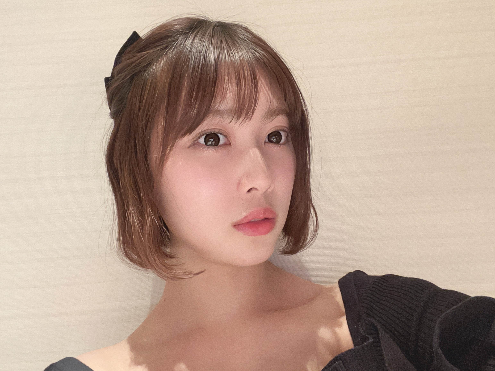

2021/0207Sunでこっぱちぱち
こんばんは！
伊藤純奈です
まえのみーぐりで
おでこだしました久々
画面越しだからさ
チークとかリップとかちょいと
濃いめじゃないとまっちろに
うつっちゃうんだよね。だから
写真だとちょいと濃いめにみえるね。
そして今日もミーグリでした！

うしろはリボンです〜
メイクさんがかわいくしてくれました
そんな感じでここ最近は
ミーグリで毎週ファンの
皆様とお話できてますꪔ̤̥
去年のバスラとかアンダラとかの
感想たくさん聞けてほくほくしております
趣味のお話とか、あとコスメお洋服とかの
お話もとってもたのしい！
みんながコスメ聞いてくれるからもう
手元に用意するようになりました。(笑)
いつでも聞いてくれればごそごそと
出すので言ってね〜〜
まだミーグリありますので
申し込みお待ちしております♡
お休みの日も、同じ現場にいるのに
違う場所にいるからっていう理由でも
やたらと連絡取り合う乃木坂ちゃんが
ほんと愛おしいの塊で困る。
おもしろい事があったらすぐ共有したくなる。
みんなも何かあったら共有したくなる人いる？ꪔ̤̥
2021/02/07 19:54
コメント(372)
おはよう
東京で桜の開花宣言があったね
こんな状況だけど
綺麗な桜を見て癒やされたいなぁ
今年は乃木坂46の活動はどうなるんだろ？
やっぱり、ライブも激減で
一人ひとりのお仕事も減っちゃうのかな。。。
新曲のリリースもしばらくは難しいよね？
いや、今年こそは乃木坂46躍進の年に
なるはずっ！(｀･ω･´)/ｴｲｴｲｵｰ
一生懸命応援するから
昨日はホワイトデーだったね！
僕は心の中で純奈ちゃんに
安納芋トリュフのお返しをあげたよ！
受け取ってくれたかな？
さて、今日も頑張っていきましょー！
そりゃあ
東京で桜の開花宣言があったね
こんな状況だけど
綺麗な桜を見て癒やされたいなぁ
今年は乃木坂46の活動はどうなるんだろ？
やっぱり、ライブも激減で
一人ひとりのお仕事も減っちゃうのかな。。。
新曲のリリースもしばらくは難しいよね？
いや、今年こそは乃木坂46躍進の年に
なるはずっ！(｀･ω･´)/ｴｲｴｲｵｰ
一生懸命応援するから
昨日はホワイトデーだったね！
僕は心の中で純奈ちゃんに
安納芋トリュフのお返しをあげたよ！
受け取ってくれたかな？
さて、今日も頑張っていきましょー！
そりゃあ
純奈ちゃんこんにちは〜
ex大衆読んだよ〜！
２期生ライブがもっと楽しみになったし、コロナで想定とは違った1年だったと思うけど、純奈ちゃんが楽しめていたらいいなって思った！あと、やっぱり純奈ちゃんのお芝居観たいな
純奈ちゃんも見えないところだけど考えて頑張ってるんだなあと知れて、私も頑張ろうと思った！ありがとう！
今週ミーグリ参加します！楽しみ！
ex大衆読んだよ〜！
２期生ライブがもっと楽しみになったし、コロナで想定とは違った1年だったと思うけど、純奈ちゃんが楽しめていたらいいなって思った！あと、やっぱり純奈ちゃんのお芝居観たいな
純奈ちゃんも見えないところだけど考えて頑張ってるんだなあと知れて、私も頑張ろうと思った！ありがとう！
今週ミーグリ参加します！楽しみ！
純奈ー。お疲れ様。＾＾
いよいよ2期生ライブのチケットが発売になったね。
モバイル会員チケット購入したよ。とても楽しみにしてるよ。
純奈もベストコンディションで楽しめるようにうまく調整してください。(^_^)/
P.S.
ex大衆は水曜日の夕方に配送を受け取る予定です。
みおなのフォトブックも買うつもりです。＾＾
いよいよ2期生ライブのチケットが発売になったね。
モバイル会員チケット購入したよ。とても楽しみにしてるよ。
純奈もベストコンディションで楽しめるようにうまく調整してください。(^_^)/
P.S.
ex大衆は水曜日の夕方に配送を受け取る予定です。
みおなのフォトブックも買うつもりです。＾＾
純奈、こんにちは。。。。。
土日の全握個握ミーグリ お疲れ様でした、、、
今日も暖かい、春の訪れはすぐそこまでですね、、、
桜前線は、ばらばらと展開中 !!
私の、21日日曜日の
純奈個握ミーグリの準備もしないと、、、
☆『EX大衆』購入しました!!
れのとの「歌と舞台」のクロストーク
心に響きましたよ、、、
れのの歌唱力ののびしろは、
まだまだあると思って見ています。
もちろん、純奈もさらなる grade up 期待大 !!
きっと、久保ちゃんと３期生、乃木坂を
引っ張っていく存在の一人になるね。
舞台も場数を積んで、存在感が出て来ました、、、
2020年は「乃木坂主体の予定」だったんですね。
さてさて、2021年は、やはり、
舞台、ミュージカルにも出てほしいな。
☆２期生ライブ 乃木坂チケット確保してあります、、、
今夜の『のぎおび』も楽しみにしています、、、
第３波は下山中でしょうか、、、東京は下げ止まり??
東京圏『緊急事態宣言』再延長中!!
またまだ寒い冬も続いています、、、
くれぐれも身体を大切にしてくださいね。。。。。
土日の全握個握ミーグリ お疲れ様でした、、、
今日も暖かい、春の訪れはすぐそこまでですね、、、
桜前線は、ばらばらと展開中 !!
私の、21日日曜日の
純奈個握ミーグリの準備もしないと、、、
☆『EX大衆』購入しました!!
れのとの「歌と舞台」のクロストーク
心に響きましたよ、、、
れのの歌唱力ののびしろは、
まだまだあると思って見ています。
もちろん、純奈もさらなる grade up 期待大 !!
きっと、久保ちゃんと３期生、乃木坂を
引っ張っていく存在の一人になるね。
舞台も場数を積んで、存在感が出て来ました、、、
2020年は「乃木坂主体の予定」だったんですね。
さてさて、2021年は、やはり、
舞台、ミュージカルにも出てほしいな。
☆２期生ライブ 乃木坂チケット確保してあります、、、
今夜の『のぎおび』も楽しみにしています、、、
第３波は下山中でしょうか、、、東京は下げ止まり??
東京圏『緊急事態宣言』再延長中!!
またまだ寒い冬も続いています、、、
くれぐれも身体を大切にしてくださいね。。。。。
純奈ー。こんばんは。＾＾
今日、EX大衆の記事を読んだよ。
乃木坂の歌唱メン・舞台メンとしての矜持を持ちつつ、でも外に出たらまだまだ勉強中っていうような謙虚な気持ちが感じられました。
あと、「タッパ」なんて単語使っちゃうとこがさすが純奈だなって思って、思わずクスッとなってしまったよ。(笑)
のぎおびは観られなかった。。。残念。(>_<)
でも2期生ライブは楽しみにしているよ。(^_^)/
今日、EX大衆の記事を読んだよ。
乃木坂の歌唱メン・舞台メンとしての矜持を持ちつつ、でも外に出たらまだまだ勉強中っていうような謙虚な気持ちが感じられました。
あと、「タッパ」なんて単語使っちゃうとこがさすが純奈だなって思って、思わずクスッとなってしまったよ。(笑)
のぎおびは観られなかった。。。残念。(>_<)
でも2期生ライブは楽しみにしているよ。(^_^)/
こんばんは
昼間はもうかなり暖かくて
すっかり春らしくなりましたね
衣替えはもう済んだかな？
純奈のことだから、きっと
お洒落な春服いっぱい買ったんじゃない？
春ワンピとか春シャツとか春コートとか
見たいな、見たいな〜！
あっ！春メイクも！
女性のファッションで春を感じる
今日この頃です☺︎
昼間はもうかなり暖かくて
すっかり春らしくなりましたね
衣替えはもう済んだかな？
純奈のことだから、きっと
お洒落な春服いっぱい買ったんじゃない？
春ワンピとか春シャツとか春コートとか
見たいな、見たいな〜！
あっ！春メイクも！
女性のファッションで春を感じる
今日この頃です☺︎
お変わりありませんか。オンラインミーグリを無事乗り切ったようなので、体調は回復したのでしょうか。
私のつぶやきが聞こえたのでしょうか。先日の投稿のすぐ後にライブの発売がようやく開始になりました。ややっこしい手続きを経て1期生とともに2期生ライブのチケットを何とか購入できました。ラッキーなことに2期生ライブが日曜日なので、リピート配信とともに2回純奈さんに会えますね。
早生まれの次女が今週22歳になります。同学年を調べてみると、広瀬すずさん、橋本環奈さん、ゴルフ黄金世代、渡邉理佐さん、長濱ねるさん、飛鳥さん、まあやさん、蘭世さん、絢音さん、美波さん、真佑さん、奈於さん、そして、純奈さん！すごい学年ですね。娘は、平凡ですが、やさしい自慢の娘です。純奈さんのお父様も、綺麗で素敵な娘をもってさぞかし鼻高々でしょうね。
体を労わりながらライブの練習頑張ってください。
私のつぶやきが聞こえたのでしょうか。先日の投稿のすぐ後にライブの発売がようやく開始になりました。ややっこしい手続きを経て1期生とともに2期生ライブのチケットを何とか購入できました。ラッキーなことに2期生ライブが日曜日なので、リピート配信とともに2回純奈さんに会えますね。
早生まれの次女が今週22歳になります。同学年を調べてみると、広瀬すずさん、橋本環奈さん、ゴルフ黄金世代、渡邉理佐さん、長濱ねるさん、飛鳥さん、まあやさん、蘭世さん、絢音さん、美波さん、真佑さん、奈於さん、そして、純奈さん！すごい学年ですね。娘は、平凡ですが、やさしい自慢の娘です。純奈さんのお父様も、綺麗で素敵な娘をもってさぞかし鼻高々でしょうね。
体を労わりながらライブの練習頑張ってください。
純ちゃんちゃん、のぎおび〜〜⤴️⤴️
めちゃめちゃ〜〜〜⤴️⤴️⤴️
可愛かったよ〜〜〜〜⤴️⤴️❤️❤️❤️笑顔
ん❔あ、いけない、いつもの❕笑顔
チャァオ〜〜〜!☆彡
純ちゃんたん❤️❤️❤️❤️❤️笑顔
明るいヘアカラ〜素敵だったよ〜〜〜⤴️⤴️❤️❤️❤️❤️❤️
ロングヘアも〜〜〜⤴️⤴️
とってもとっても素敵だった〜〜〜⤴️⤴️❤️❤️❤️❤️❤️笑顔
本当に可愛くて、可愛くて、素敵過ぎ〜〜〜〜❤️❤️❤️❤️❤️
堀さんと一緒の純ちゃんちゃんって〜〜⤴️⤴️
本当におしとやかで
めちゃめちゃ〜可愛かった〜〜❕❤️❤️❤️笑顔
すごく可愛かった❤️❤️❤️❤️❤️笑顔
カワユ過ぎて、カワユ過ぎて、聴いてた話しの内容が
全部ぶわっと、頭からふっとんだよ〜〜〜⤴️⤴️❤️❤️❤️❤️❤️
堀さんをずっと見つめる、純ちゃんの瞳が
本当に、ママから遠慮する子供みたいで可愛かった〜〜❤️❤️❤️❤️❤️
本当にカワユくて、このコメントをあと3回・5回は繰り返してつづって書きたいくらい
可愛くて、良かったよ〜〜❤️❤️❤️❤️❤️
(そこは〜さすがに、やめておきます！)
やっぱり〜純ちゃんの横には堀さんが１番だとわかりました❤️❤️❤️笑顔
純ちゃんをより一層素敵にする〜コーディネーターは、堀さんだと❤️❤️❤️笑顔
それじゃ〜純ちゃんまたねぇ〜〜⤴️⤴️❤️❤️❤️笑顔
ライブ頑張ってねぇ❤️❤️❤️笑顔
ヾ(@゜▽゜@)ノ❤️❤️❤️
❇️❇️おすまし！⚜️❇️⭐彡
こんばんは
今日も一日お疲れさまでした
今日で、実質26thシングルの活動が
終わりましたね
普段とは違う
コロナ禍での活動大変でしたね
元気に活動する姿を見て
こちらも勇気づけられましたし
元気をもらいました
今までありがとうございました
今日も一日お疲れさまでした
今日で、実質26thシングルの活動が
終わりましたね
普段とは違う
コロナ禍での活動大変でしたね
元気に活動する姿を見て
こちらも勇気づけられましたし
元気をもらいました
今までありがとうございました
純奈ちゃんこんにちは〜
ミーグリお疲れ様でした！超楽しかった！就活頑張れます☻
純奈ちゃんとお話する時間が本当に楽しくて大好き！
今日のミーグリで純奈ちゃんに好きだと全然伝えられてないなと猛省してるので、次のミーグリでは純奈ちゃんに1番好きだよ〜と、伝えます！
次いつあるかわからないの悲しい(T_T)
純奈ちゃん大好きです！！
ライブのリハも忙しいと思うけど、応援してます！二期生ライブ楽しみ！健康には気をつけてね〜
ミーグリお疲れ様でした！超楽しかった！就活頑張れます☻
純奈ちゃんとお話する時間が本当に楽しくて大好き！
今日のミーグリで純奈ちゃんに好きだと全然伝えられてないなと猛省してるので、次のミーグリでは純奈ちゃんに1番好きだよ〜と、伝えます！
次いつあるかわからないの悲しい(T_T)
純奈ちゃん大好きです！！
ライブのリハも忙しいと思うけど、応援してます！二期生ライブ楽しみ！健康には気をつけてね〜
のぎおび見ました！！！（生配信ではないのですが。）2期生ツートップの贅沢過ぎる美女ツーショット（もしかしたら、はとこ？純奈さんのブログの写真を見ると確かに似ている。）。お二人の仲の良さが垣間見えて何だかほっこりしました。こんな素敵な二人が半分になってしまうのが本当にさびしいですね。
9thバスラでは気が付かなかったのですが、髪がだいぶ伸びたのですね。8thバスラのときよりも長いくらいでしょうか。とても素敵です。フードを被ったところも、赤ずきんちゃんならぬ白ずきんちゃんみたいでめっちゃ可愛いです。おじさんに言われてもね、、、
シュークリームの話題の間、バックから純奈さんの歌声が、、、なんだこの名曲は、、、2期生曲？？？調べたら、純奈さんを含めた6人のデビュー曲の「ボーダー」だたのですね。あった、8thバスラのday1！「そのボーダーに縛られていたこと～」、聞き惚れます。つくづく8thバスラの演出がすごいなあと思います。一番盛り上がるところに純奈さんを投入しているところが。8thバスラのしんみりと聞かせる「誰よりそばにいたい」もサビの直前の一番おいしいところで入ってきてアクセントを加えているところがたまらないです。歌のうまい方も他にいらっしゃいますが、二人といない深みは、本当に魅力的です。
記念日ライブが間近ですね。ドキドキです。体を労わりながら涙涙の練習頑張ってください。
9thバスラでは気が付かなかったのですが、髪がだいぶ伸びたのですね。8thバスラのときよりも長いくらいでしょうか。とても素敵です。フードを被ったところも、赤ずきんちゃんならぬ白ずきんちゃんみたいでめっちゃ可愛いです。おじさんに言われてもね、、、
シュークリームの話題の間、バックから純奈さんの歌声が、、、なんだこの名曲は、、、2期生曲？？？調べたら、純奈さんを含めた6人のデビュー曲の「ボーダー」だたのですね。あった、8thバスラのday1！「そのボーダーに縛られていたこと～」、聞き惚れます。つくづく8thバスラの演出がすごいなあと思います。一番盛り上がるところに純奈さんを投入しているところが。8thバスラのしんみりと聞かせる「誰よりそばにいたい」もサビの直前の一番おいしいところで入ってきてアクセントを加えているところがたまらないです。歌のうまい方も他にいらっしゃいますが、二人といない深みは、本当に魅力的です。
記念日ライブが間近ですね。ドキドキです。体を労わりながら涙涙の練習頑張ってください。
純たんたんは〜〜⤴️⤴️
ストレートのウイスキーと〜〜⤴️⤴️
ストレートのウッカどっちが好き〜〜❔❤️❤️❤️笑顔
おいら、ストレスのウッカ❕笑顔
口に含むと、甘く感じるからウッカ❕笑顔
美味しい〜クリームのかかったコーヒーゼリーにかけても、美味しい〜し〜〜・・
ガトーショコラの上にかけてヒタヒタに浸して食べるのが、また美味しいよ〜〜❕笑顔
ガトーショコラなら、ブランデーならもっと美味しいよ〜〜❕笑顔
純たん・・めちゃめちゃ〜まわってきたから、寝るよ❕❤️❤️❤️笑顔
❇️❇️おすまし！⚜️❇️⭐彡
純奈おはよう☀
次回の乃木坂工事中楽しみで仕方ないよ。ほんとに堀ちゃんこれが最後だからね。堀ちゃんにもし言葉を送るとしたらどう？2期生ライブに向けても色んな思いがあると思うけどね、純奈のサヨナラの意味楽しみにしてるよ！
次回の乃木坂工事中楽しみで仕方ないよ。ほんとに堀ちゃんこれが最後だからね。堀ちゃんにもし言葉を送るとしたらどう？2期生ライブに向けても色んな思いがあると思うけどね、純奈のサヨナラの意味楽しみにしてるよ！
じゅんなちゃん
ミーグリ終わっちゃったね
今回も 他愛もない話に付き合ってもらい
ほんとにいつもありがとう〜
また次も懲りずに
お付き合いよろしくお願いします
うんうん って優しい笑顔でお話し聞いてくれる
ミーグリって楽しいね
2期生ライブ楽しみにしてます
ミーグリ終わっちゃったね
今回も 他愛もない話に付き合ってもらい
ほんとにいつもありがとう〜
また次も懲りずに
お付き合いよろしくお願いします
うんうん って優しい笑顔でお話し聞いてくれる
ミーグリって楽しいね
2期生ライブ楽しみにしてます
チャァオ〜〜!☆彡
純ちゃん❕❤️❤️❤️
お疲れ様です❕❤️❤️❤️
今日は、ゆっくり〜〜休んでねぇ❤️❤️❤️笑顔
今日おいらは、くるぶしの腱とアキレス腱の怪我の回復をみる為に
アンクルサポーターを持って、久しぶりバッティングセンターに行って来ました❕笑顔
バッティングをしてみて、サポーターなしでいけました！笑顔
あとは、ダッシュができれば完璧に治るんですが！
この前怪我した足で、調子こいて〜
階段を7段飛びしたら筋が「ペシィ」と音を
たててヤバかったです❕笑
マジにヤバかったです❕笑顔
純ちゃん怪我だけは、苦労するから気をつけてねぇ〜❤️❤️❤️
２期生ライブ頑張ってねぇ〜〜❤️❤️❤️笑顔
(///∇///)／❤️❤️❤️
先のコメントをみたら、ストレートがストレスって打ってました❕笑
純ちゃん わかりずらくて、ごめんなさい❤️❤️❤️
❇️❇️おすまし！⚜️❇️⭐彡
ひかりテレビの配信見ました。これを見るためにまた大変な思いを。ひかりTVを見るために諸手続きをして専用チューナーまで購入した後で、家の光回線が適合していないことがわかり大騒動でしたが、結局dTVチャンネルで見られることがわかりました。録画は残念ながらできませんが。
正解数トップおめでとうございます！色々なエピソードが聞けて面白かったです。飛鳥さんが未央奈さんとやりたかったことには、ウルっと来ましたね。
やはり、お綺麗で、見とれてしまいました。過去ライブ振り返りでは、「失恋したら、顔を洗え」、「ボーダー」、「釣り堀」、、、ソロの「釣り堀」の美声が全国の人に届いたと思うといい気分です。一点だけを見つめるなんて、意外にも歌唱中緊張されていたのですね。
リハ中の気分転換になりましたか。いよいよですね。油断せず体に気をつけてください。細やかながら、、、
正解数トップおめでとうございます！色々なエピソードが聞けて面白かったです。飛鳥さんが未央奈さんとやりたかったことには、ウルっと来ましたね。
やはり、お綺麗で、見とれてしまいました。過去ライブ振り返りでは、「失恋したら、顔を洗え」、「ボーダー」、「釣り堀」、、、ソロの「釣り堀」の美声が全国の人に届いたと思うといい気分です。一点だけを見つめるなんて、意外にも歌唱中緊張されていたのですね。
リハ中の気分転換になりましたか。いよいよですね。油断せず体に気をつけてください。細やかながら、、、
純奈おはよ☺️
凄く気になってたんだけど、ミーグリってやつ俺も参加してみたいなぁって思ってたんよ 次回もしどこかいいタイミングでまたミーグリっていうのがあれば是非参加してみたい！色々話したいことが沢山あるからね笑笑 その時はよろしくね 年も一つ違いだから気が合いそうだから楽しみにしとく
凄く気になってたんだけど、ミーグリってやつ俺も参加してみたいなぁって思ってたんよ 次回もしどこかいいタイミングでまたミーグリっていうのがあれば是非参加してみたい！色々話したいことが沢山あるからね笑笑 その時はよろしくね 年も一つ違いだから気が合いそうだから楽しみにしとく
どっちか選ぼうとすると、面白い方に行きたくなっちゃう性格なんです。
じゅんなちゃん
ミーグリ終わっちゃったね
今回も 他愛もない話に付き合ってもらい
ほんとにいつもありがとう〜
また次も懲りずに
お付き合いよろしくお願いします
うんうん って優しい笑顔でお話し聞いてくれる
ミーグリって楽しいね
2期生ライブ楽しみにしてます
ミーグリ終わっちゃったね
今回も 他愛もない話に付き合ってもらい
ほんとにいつもありがとう〜
また次も懲りずに
お付き合いよろしくお願いします
うんうん って優しい笑顔でお話し聞いてくれる
ミーグリって楽しいね
2期生ライブ楽しみにしてます
ブログ更新ありがとうございます。
純奈ちゃん、リボン似合って居ます❣️
そして体調大丈夫ですか？
そして体調大丈夫ですか？


焼き芋焼酎届きましたか？